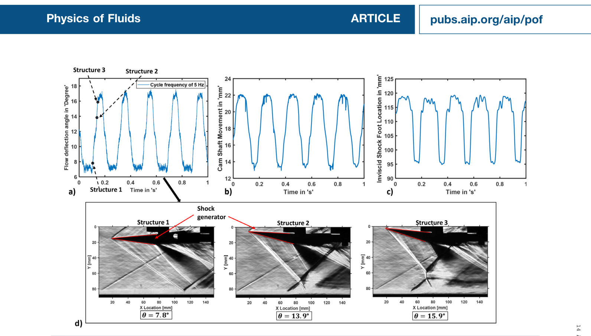
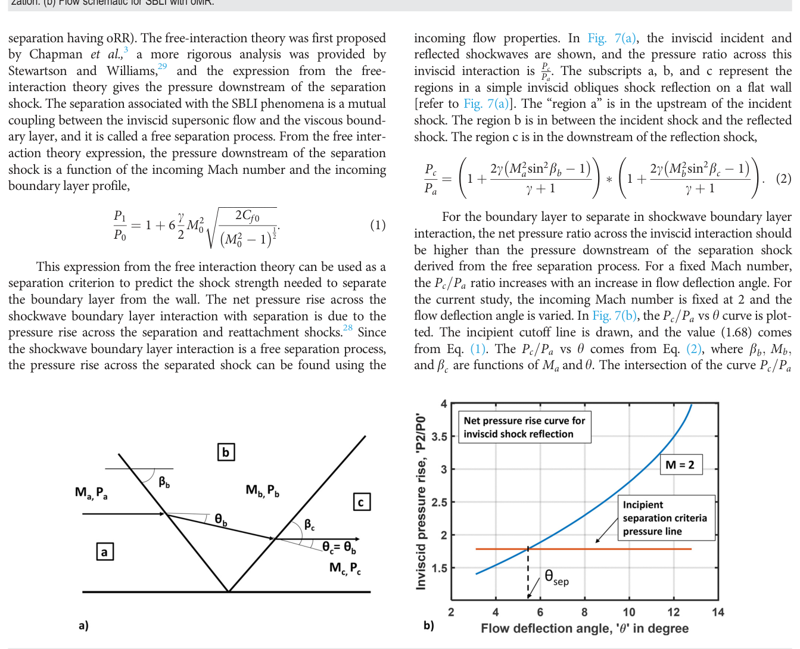
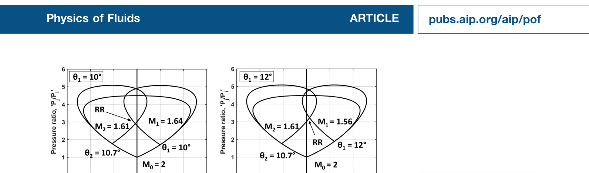
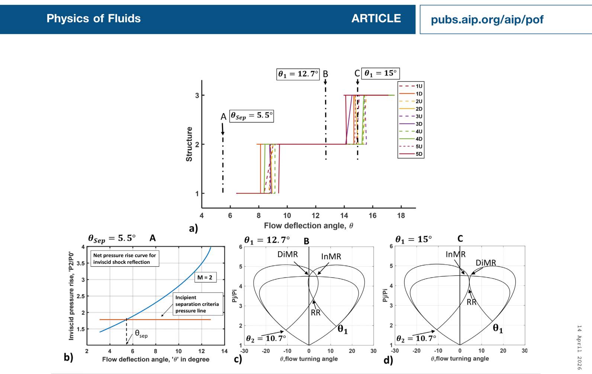

01中文摘要
研究由可变气流偏转角激波发生器产生的斜激波/边界层干扰。二维楔形激波发生器固定在风洞试验段并安装于顶壁，通过俯仰运动改变净气流偏转角，从而在固定来流马赫数下改变激波强度和边界层逆压梯度。高速纹影观察到三类不同的SWBLI结构，给出了结构示意图，并提出用于判断结构转变的模型；分别建立类型1→2和类型2→3转变的两个临界气流偏转角判据，并用实验观察验证，判据中的假设也得到实验支持。
原始摘要（英文/原文）
Shockwave boundary layer interaction is studied for oblique shocks generated from a shock generator with a varying flow deflection angle. A two-dimensional shock generator with a wedge-shaped geometry is fixed inside the test section and mounted to the wind tunnel’s top wall. The shock generator is made to pitch up and down so that the net flow deflection angle changes because of the pitch motion. As a result, the shock strength changes for a varying flow deflection angle of the shock generator with a fixed incoming Mach number of the flow. The imposed adverse pressure gradient on the boundary layer by this incident shock changes, which influences the shape and structure of the shockwave boundary layer interaction. Three different shockwave boundary layer interaction structures are observed with high-speed schlieren from the experiments conducted for the current study. Schematics for these structures’ types are illustrated, and a model is presented to build the transition criteria for the flow deflection angles for which the transition would take place from one structure to the other. The two transition criteria, one for type 1 to type 2 transition and the other for type 2 to type 3 transition, are validated with the observed results from the experiments. Assumptions made for the transition criteria are also validated with experimental results.
02阅读说明
类型：实验研究（Mach 2暂冲式风洞+高速纹影+皮托）。材料范围：bundle全文840行（PDF共15页）已读到EOF；抓图清单16件。式(1)(2)经原PDF第7页文本层与字体层逐字核对（仅读1页，未超每篇6页限制）；式(1)左端为P₁/P₀、系数“6”均按版面字形确认。图件file/n/page均按抓取清单原样使用。 文章类型：期刊
03一句话核心与三句话摘要
Mach 2风洞中用俯仰楔形激波发生器连续改变偏转角7°–17°，识别三类SBLI结构并给出自由干扰与激波极线转变判据。
- 已有SBLI研究多为固定几何，缺乏连续改变入射激波强度时结构转变的实验判据。 AI概括
- 作者用5 Hz俯仰、5000 fps高速纹影观察到未分离、oRR与oMR三类结构，并由自由干扰判据得到θsep=5.5°。 原文明确
- 激波极线分析预测14°附近oRR/oMR双解并在实验中表现为转变带；分离激波足位置存在随俯仰频率增大的率相关滞回。 原文明确
04核心内容清单
| 要点 | 类型 | 重要性 | 原文依据 | 属性 |
|---|---|---|---|---|
| 风洞与来流：Mach 2、U∞=517 m/s、Re=3.4×10⁷/m、p₀=2×10⁵ Pa（±0.5%）、T₀=303 K（最大降3.2%）、质量流量4.06 kg/s、运行11.65 s。 | 实验条件 | A | §II，PDF第3–4页（期刊056132-2至-3） | 原文明确 |
| 来流边界层：δ=6.3 mm（0.99U∞），皮托耙位于激波发生器前缘上游15 mm，管外径1.1 mm、空间误差±0.55 mm，近壁用Sun–Childs拟合。 | 实验条件 | A | §II，PDF第4页；图2 | 原文明确 |
| 激波发生器运动：二维10°楔静态安装，净偏转角7°–17°；5 Hz、1 s内5个周期；凸轮位移约10 mm，无粘入射点移动约22 mm；相对Mach 0.0116、激波强度变化0.2%。 | 实验条件 | A | §III，PDF第4页；图3 | 原文明确 |
| 三类SBLI结构：7.8°未分离（入射+反射激波）；13.9°为oRR（分离激波、剪切层、膨胀扇、再附激波）；15.9°为oMR（公共Mach杆、两条剪切层）。 | 流态识别 | A | §III，PDF第4–6页；图4–6 | 原文明确 |
| Type 1→2判据：自由干扰式(1)在M=2下给出起始分离压比1.68；与无粘反射式(2)求交得θsep=5.5°。 | 转变判据 | A | §IV.A，PDF第6–7页；式(1)(2)；图7 | 原文明确 |
| 分离激波角随偏转角几乎不变，高θ时渐近自由干扰理论值，支持分离激波强度只依赖来流Mach数与边界层。 | 实验验证 | A | §IV.B，PDF第8页；图8 | 原文明确 |
| 无粘等效模型：三角形等压分离区，S1/S2在A点干扰后变为S4/S3，滑移线满足P₃=P₄、α=θ₁−θ₃=θ₂+θ₄；极线交点即oRR解。 | 理论模型 | A | §IV.C，PDF第8页；图9 | 原文明确 |
| oMR分类：DiMR/InMR按滑移线相对偏转方向区分；DiMR+DiMR与InMR+DiMR物理可行，InMR+InMR因滑移线发散不可行。 | 理论模型 | B | §IV.D，PDF第9页；图10 | 原文明确 |
| 极线场景：θ₁=10°、12°仅oRR；14°出现oRR+oMR双解；16°仅oMR，对应type 2→3转变。 | 转变判据 | A | §IV.E，PDF第10页；图11 | 原文明确 |
| 滞回：同一θ下俯仰下行阶段分离激波足更靠上游；5 Hz滞回宽度大于2 Hz，7°→17°分别用100 ms与250 ms，故为率相关。 | 动态特性 | A | §IV.F，PDF第11–13页；图13–15 | 原文明确 |
| 转变带：五个周期中结构转变发生在θ带内而非单一值，θsep为type 1→2带的下界，实验与两条理论判据一致。 | 实验验证 | A | §IV.G、§V，PDF第12–14页；图16 | 原文明确 |
05引言：研究问题与领域缺口
研究背景是超声速飞行器上激波对边界层施加逆压梯度所引发的SBLI：分离会造成升力/控制权限损失、进气道总压恢复下降甚至不起动，喷嘴过膨胀还会产生侧向载荷（§I，PDF第2页，期刊056132-1）。作者综述了典型几何（激波入射平板、压缩斜坡、后掠斜坡、双锥、竖尾翼等）及低频率非定常研究，并指出已有工作多针对固定几何或固定激波强度（p.056132-1至056132-2）。本文的缺口是：当激波发生器的偏转角（从而入射激波强度）在风洞运行期间连续变化时，三类SBLI结构如何转变、能否用自由干扰与激波极线理论预测，尚缺实验检验。为此作者把二维10°楔形激波发生器安装在风洞顶壁，通过凸轮—连杆机构使其俯仰，使净偏转角在7°–17°间变化，在Mach 2来流下研究分离激波角、结构转变与滞回（§I，PDF第3页）。【AI概括，依据§I】
06流动条件与几何构型
| 项目 | 数值/描述 | 依据 | 备注 |
|---|---|---|---|
| 风洞与来流 | 间歇吹除式Mach 2风洞；储气罐30 m³；喷管由特征线法设计并按位移厚度修正；试验段400 mm×151 mm×100 mm；U∞=517 m/s；Re=3.4×10⁷/m。 | §II，PDF第3–4页 | |
| 驻室参数 | p₀=2×10⁵ Pa（运行偏差±0.5%）；T₀=303 K（最大下降3.2%，速度误差1.5%）；质量流量4.06 kg/s；运行时间11.65 s。 | §II，PDF第4页 | |
| 激波发生器 | 二维楔，几何偏转角10°（静态），安装于顶壁；净偏转角7°–17°；俯仰5 Hz，1 s内5个周期；另做2 Hz对比。 | §I，PDF第3页；§III，PDF第4页 | |
| 来流边界层 | δ=6.3 mm（0.99U∞处）；皮托耙位于前缘上游15 mm；皮托管外径1.1 mm，空间误差±0.55 mm；Sun–Childs解析拟合近壁剖面。 | §II，PDF第4页；图2 | |
| 纹影系统 | Z型布置；卤素灯+圆孔光阑；两块焦距3 m、直径300 mm凹面镜；水平刀口；Photron Fastcam SA1，5000 fps。 | §II，PDF第3页 | |
| 压力与温度测量 | 驻室总压、总温；皮托耙测来流边界层；纹影图像处理提取激波角与位置；未提及壁面压力传感器。 | §II，PDF第3–4页 | |
| 俯仰波形 | 非完美正弦；周期高度重复；极端位置有小于0.3°的局部停留，作者归因于图像处理噪声以及槽销/凸轮间隙。 | §III，PDF第4页；图3 | |
| 运动引起的相对效应 | 凸轮位移约10 mm；无粘入射点移动约22 mm；激波相对速度约3 m/s，相对Mach 0.0116；激波强度变化0.2%。 | §III，PDF第4页；图3 | |
| 理论判据的来流条件 | Ma=2；θ在7°–17°变化；分离激波角由自由干扰式(1)与来流边界层c_f0确定；无粘反射式(2)按斜激波关系。 | §IV.A，PDF第6–7页；式(1)(2) | |
| 动态工况 | 5 Hz：7°→17°用时100 ms；2 Hz：用时250 ms；两者均用于滞回对比。 | §IV.F，PDF第11–12页 |
07核心现象与关键参数
| 参数 | 定义 | 数值 | 关系/说明 | 依据 |
|---|---|---|---|---|
| M∞（来流Mach数） | 试验段自由来流Mach数。 | 2 | §I，PDF第3页；§II，PDF第4页 | |
| U∞ | 自由来流速度。 | 517 m/s | §II，PDF第4页 | |
| Re | 单位长度Reynolds数。 | 3.4×10⁷/m | §II，PDF第4页 | |
| p₀、T₀ | 驻室总压、总温。 | 2×10⁵ Pa（±0.5%）；303 K（最大降3.2%） | §II，PDF第4页 | |
| δ | 来流边界层厚度（0.99U∞处）。 | 6.3 mm | §II，PDF第4页；图2 | |
| θ（净偏转角） | 激波发生器俯仰后对来流产生的净偏转角。 | 7°–17°；静态几何10° | §I，PDF第3页；§III，PDF第4页 | |
| 俯仰频率 | 激波发生器俯仰运动频率。 | 5 Hz（主实验，5周期/1 s）；2 Hz（对比） | §III，PDF第4页；§IV.F，PDF第11–12页 | |
| 纹影帧率 | 高速纹影记录帧率。 | 5000 fps | §II，PDF第3页；§III，PDF第4页 | |
| θsep | 起始分离对应的净偏转角，由式(1)与式(2)交点给出。 | 5.5° | §IV.A，PDF第7页；图7 | |
| 起始分离压比 | 式(1)给出的分离激波下游压比阈值Pc/Pa。 | 1.68 | §IV.A，PDF第6–7页；式(1)；图7(b) | |
| C_{f0} | 入射激波处来流边界层壁面摩擦系数，出现在式(1)中。 | 文中未给出数值（仅说明由式(1)算得1.68） | §IV.A，PDF第6–7页；式(1) | |
| γ | 比热比，出现在式(1)(2)中。 | 文中未给出取值 | §IV.A，PDF第6–7页；式(1)(2) | |
| 无粘入射点移动量 | 俯仰过程中无粘激波与壁面交点位移。 | 约22 mm | §III，PDF第4页；图3(c) |
08方法与数据
实验在间歇吹除式Mach 2风洞中进行：储气罐30 m³，收敛—扩张喷管由特征线法设计并按边界层位移厚度修正；试验段长400 mm、截面151 mm×100 mm；来流速度517 m/s，Re=3.4×10⁷/m；总压2×10⁵ Pa（运行中偏差±0.5%），总温303 K（最大下降3.2%，对应速度误差1.5%），质量流量4.06 kg/s，运行时间11.65 s（§II，PDF第3–4页）。激波发生器为二维楔，静态几何偏转角10°，通过安装在扩压器内的连杆、感应电机与凸轮组件驱动俯仰，净偏转角7°–17°（PDF第3页）。流场显示采用Z型高速纹影：卤素灯、圆孔光阑、两块焦距3 m/直径300 mm凹面镜、水平刀口，Photron Fastcam SA1以5000 fps记录（PDF第3页）。来流边界层用皮托耙在试验段中心面扫描，测点位于激波发生器前缘上游15 mm，皮托管外径1.1 mm、空间误差±0.55 mm；边界层厚度δ=6.3 mm（0.99U∞处），近壁缺失数据用Sun与Childs解析拟合补足（§II，PDF第4页，图2）。纹影图像用MATLAB图像处理工具箱提取激波角、分离激波足位置与楔角；俯仰响应、凸轮位移与无粘入射点位置均由纹影追踪（§III，PDF第4页，图3）。理论分析用自由干扰式(1)、无粘斜激波反射式(2)与激波极线构造；另做2 Hz与5 Hz两种俯仰频率以检验滞回的率相关性（§IV，PDF第6–12页）。【原文明确，§II–§IV】
| 项目 | 内容 | 依据 | 备注 |
|---|---|---|---|
| 风洞改造 | 在扩压器内布置连杆、感应电机与凸轮组件，经顶壁连接驱动二维楔俯仰，使净偏转角7°–17°变化。 | §I，PDF第3页；§II，PDF第4页；图1 | |
| 来流边界层测量 | 皮托耙在试验段中心面自底壁向上扫描，测点位于前缘上游15 mm；用Sun–Childs解析拟合补足近壁缺失数据。 | §II，PDF第4页；图2 | |
| 高速纹影 | Z型纹影、水平刀口、5000 fps记录；用于识别激波结构并测量楔角、激波角与分离激波足位置。 | §II，PDF第3–4页 | |
| 图像处理 | MATLAB图像处理工具箱与自编代码提取激波角、分离激波足位置；每周期每20帧取点，12°–14°区间加密采样。 | §III，PDF第4页；§IV.B，PDF第8页 | |
| 自由干扰判据 | 用式(1)计算分离激波下游压比阈值（M=2时为1.68），作为type 1→type 2的起始分离判据线。 | §IV.A，PDF第6–7页；式(1) | |
| 无粘斜激波反射 | 用式(2)计算入射+反射的净压比Pc/Pa随θ变化，与1.68阈值线求交得θsep。 | §IV.A，PDF第6–7页；式(2)；图7 | |
| 激波极线分析 | 以来流Mach数绘制主极线；左极线按分离激波偏转θ₂平移，右极线按入射激波偏转θ₁平移；用P₃=P₄与α=θ₁−θ₃=θ₂+θ₄确定oRR/oMR解。 | §IV.C–§IV.E，PDF第8–10页；图9–11 | |
| 滞回实验 | 分别以5 Hz与2 Hz俯仰，比较同一θ下上行/下行阶段的分离激波足位置，并追踪五个周期的转变角。 | §IV.F，PDF第11–13页；图13–16 | |
| 不确定度与误差 | p₀偏差±0.5%、T₀下降3.2%（速度误差1.5%）；皮托空间误差±0.55 mm；分离激波足定位误差取激波厚度的一半；激波低频振荡为噪声源。 | §II，PDF第4页；§IV.F，PDF第11–12页 |
09核心推导与公式
用自由干扰理论给出边界层起始分离所需的压比（式(1)），再与无粘斜激波反射的净压比（式(2)）求交，得到type 1→type 2的转变角；把分离泡视为三角形等压区，用激波极线在P₃=P₄、α=θ₁−θ₃=θ₂+θ₄条件下求oRR/oMR解，判定type 2→type 3转变及双解引起的滞回。
关键假设
- 分离泡近似为三角形等压区，泡内压力等于分离激波下游压力（Delery–Marvin无粘等效模型）。
- 分离激波角（从而θ₂）只由来流Mach数与来流边界层c_f0决定，与入射激波强度无关。
- 入射与反射激波按无粘斜激波关系处理，来流Mach数固定为2。
- 激波极线取弱激波解；强激波支的第二交点在实际定常流中不出现。
- 判据按定常/准定常处理，实验为5 Hz与2 Hz动态俯仰；二维、平面、无粘外流。
推导过程
由Chapman等提出的自由干扰理论，分离激波下游压力只依赖来流Mach数M₀与来流边界层摩擦系数C_{f0}：P₁/P₀=1+6(γ/2)M₀²√[2C_{f0}/(M₀²−1)^{1/2}]。该式在原文中直接引用，未重新推导；左端为P₁/P₀、系数6均按PDF第7页版面逐字核对。
把M₀=2与实验来流边界层的C_{f0}代入式(1)，得到分离激波下游压比阈值1.68；原文未给出C_{f0}的具体数值，只说明该值由式(1)算得。该阈值画成水平线，作为type 1→type 2判据。
把入射激波（区域a→b，激波角β_b）与反射激波（区域b→c，激波角β_c）的压比相乘，得到无粘反射的总压比：P_c/P_a=[1+2γ/(γ+1)(M_a²sin²β_b−1)][1+2γ/(γ+1)(M_b²sin²β_c−1)]，其中β_b、M_b、β_c均为M_a与θ的函数。
对固定M_a=2，P_c/P_a随θ单调增大；令其等于1.68，得θsep=5.5°。θ<θsep时无粘反射压比不足以达到起始分离阈值，流动保持附着；θ>θsep时发生分离并出现type 2结构。
分离点S位于入射点上游，分离激波S2与入射激波S1在A点相交；干扰后S1变为S4、S2变为S3，并产生滑移线。滑移线两侧压力相等P₃=P₄，滑移线角满足α=θ₁−θ₃=θ₂+θ₄；来流静压P_i=P₀。
以来流Mach数绘制主极线；左极线（分离激波）按θ₂平移，右极线（入射激波）按θ₁平移。两极化在弱激波支的交点给出(α,P_j)，满足P_j=P₃=P₄；该交点即oRR解，对应type 2结构。强激波支的第二交点在实际定常流中不出现。
若解点沿反射极线θ平移方向偏转，滑移线角与对应激波诱导的偏转同向，为DiMR；反向则为InMR。oMR只可能由DiMR+DiMR或InMR+DiMR组成：这两类滑移线汇聚，Mach杆后的亚声速流可在其间加速；InMR+InMR的滑移线发散，亚声速流无法在扩张通道中维持，故非物理。
对θ₁=10°、12°、14°、16°分别作极线：10°与12°只有oRR解（type 2）；14°同时存在oRR与oMR可行解（文中称该oMR为DiMR+InMR），故结构取决于θ的历史路径，形成滞回；16°只有oMR解（type 3）。实验五周期测得的转变落在相应θ带内，θsep=5.5°为type 1→2带的下界。
适用边界：判据限于M∞=2、二维楔、θ=7°–17°、单一风洞与边界层状态；自由干扰式(1)中C_{f0}与γ的具体取值文中未给出，1.68无法按原文独立复算；式(1)(2)均为引用关系，本文未重新推导。激波极线为无粘、定常分析，实验为5 Hz/2 Hz动态过程，准定常近似程度未量化。14°双解处原文称oMR为DiMR+InMR，而§IV.D列出的物理组合为DiMR+DiMR与InMR+DiMR，命名差异原文未解释。
10结果：主要发现与关键证据
来流与运动学：楔静态10°，净偏转角7°–17°；5 Hz下1 s内完成5个周期，极端位置有小于0.3°的局部停留（可能来自槽销间隙）；凸轮位移量级10 mm，无粘入射点移动约22 mm；由凸轮速度推得激波相对速度约3 m/s、相对Mach 0.0116，激波强度变化仅0.2%（§III，PDF第4页，图3）。三类结构：偏转角7.8°为未分离SBLI，仅有入射激波与反射激波，边界层局部增厚（图4）；13.9°为oRR，出现分离激波、剪切层、膨胀扇与再附激波（图5）；15.9°为oMR，出现公共Mach杆与两条剪切层（图6）（§III，PDF第4–6页）。Type 1→2判据：式(1)给出起始分离压比1.68（M=2），与式(2)的无粘反射压比曲线求交得θsep=5.5°；θ低于该值时不可能分离（§IV.A，PDF第6–7页，图7）。分离激波角：五个周期内随θ几乎不变，高θ时渐近于自由干扰理论值，作者据此称首次在动态变偏转角下验证自由干扰（§IV.B，PDF第8页，图8）。无粘等效模型：把分离泡视为三角形等压区，分离激波足位于入射点上游；入射/分离激波在A点干扰，S1→S4、S2→S3，滑移线角α满足P₃=P₄与α=θ₁−θ₃=θ₂+θ₄；极线交点给出oRR解（§IV.C，PDF第8页，图9）。oMR分类：按滑移线偏转方向区分DiMR与InMR；只有DiMR+DiMR与InMR+DiMR物理可行，InMR+InMR因滑移线发散不可行（§IV.D，PDF第9页，图10）。极线场景：θ₁=10°、12°仅有oRR解（对应type 2）；14°同时存在oRR与oMR解（文中称oMR为DiMR+InMR），构成双解；16°仅oMR解（对应type 3）（§IV.E，PDF第10页，图11）。滞回：同一偏转角下，俯仰下行阶段的分离激波足比上行阶段更靠上游；5 Hz滞回宽度大于2 Hz；2 Hz完成7°→17°需250 ms，5 Hz需100 ms，故滞回是率相关的（§IV.F，PDF第11–13页，图13–15）。转变带：五个周期中type 1↔2与type 2↔3转变发生在一定θ带内而非单一值，θsep为第一条判据带的下界；实验与理论判据一致（§IV.G及§V，PDF第12–14页，图16）。【原文明确，除标注外】
| 发现 | 证据 | 证据类型 | 强度 | 位置 | 属性 |
|---|---|---|---|---|---|
| 在连续变偏转角下识别出三类SBLI结构：未分离、oRR与oMR。 | 7.8°纹影仅见入射/反射激波；13.9°出现分离激波、剪切层、膨胀扇与再附激波；15.9°出现公共Mach杆与两条剪切层。 | 实验观察 | 强 | §III，PDF第4–6页；图4–6 | 原文明确 |
| 自由干扰判据预测起始分离角θsep=5.5°，对应压比阈值1.68。 | 式(1)在M=2下给1.68；与式(2)的Pc/Pa(θ)曲线交点读得5.5°；图7(b)给出交点。 | 定量判据 | 强 | §IV.A，PDF第6–7页；式(1)(2)；图7 | 原文明确 |
| 分离激波角随偏转角几乎不变，并在高θ时渐近自由干扰理论值。 | 五个周期、每20帧取点的纹影测量（图8）；作者据此称首次在动态变偏转角下验证自由干扰。 | 实验验证 | 中 | §IV.B，PDF第8页；图8 | 原文明确 |
| 激波极线预测10°、12°仅oRR，14°出现oRR/oMR双解，16°仅oMR。 | 图11(a)–(d)四个场景的极线交点；双解对应type 2/type 3共存的历史依赖。 | 理论预测 | 强 | §IV.E，PDF第10页；图11 | 原文明确 |
| oMR的物理可行组合限于DiMR+DiMR与InMR+DiMR，InMR+InMR不可行。 | 前两类滑移线汇聚，Mach杆后亚声速流可加速；InMR+InMR滑移线发散，亚声速流无法维持。 | 理论论证 | 中 | §IV.D，PDF第9页；图10 | 原文明确 |
| 同一偏转角下分离激波足存在滞回，俯仰下行阶段更靠上游。 | 图14(b)中同一θ的下行（红）曲线位于上行（蓝）曲线之上游；图13纹影对比显示同样差异。 | 动态实验 | 强 | §IV.F，PDF第11–12页；图13–14 | 原文明确 |
| 滞回是率相关的：5 Hz的滞回宽度大于2 Hz。 | 5 Hz完成7°→17°用100 ms，2 Hz用250 ms；图15(c)的滞回环明显窄于图14(b)。 | 动态实验 | 强 | §IV.F，PDF第11–13页；图14–15 | 原文明确 |
| 三类结构的转变发生在θ带内而非单一值，θsep是type 1→2带的下界。 | 五个周期图16的转变线；作者明确指出转变在带内发生，实验与两条理论判据一致。 | 实验验证 | 强 | §IV.G、§V，PDF第12–14页；图16 | 原文明确 |
| 激波发生器的俯仰运动本身对激波强度影响可忽略。 | 无粘入射点移动22 mm、相对速度约3 m/s、相对Mach 0.0116，激波强度变化仅0.2%。 | 误差分析 | 强 | §III，PDF第4页；图3 | 原文明确 |
11机制解释与论证链
分离与激波—激波干扰【原文明确】：入射激波对边界层施加逆压梯度，信息经边界层亚声速部分上传，边界层增厚并在达到起始分离条件后脱离壁面，形成回流泡；分离点位于入射点上游，分离激波足因此在上游，分离激波与入射激波在离壁一定高度处相交，形成oRR（type 2）（PDF第5–8页）。结构转变【原文明确】：θ增大→入射激波增强→分离泡变长→分离激波足更上游→激波交点升高；当极线解由oRR变为oMR时出现公共Mach杆与两条剪切层（type 3），Mach杆后亚声速流在两条汇聚剪切层之间加速（PDF第9–10页）。滞回【原文明确/概括】：同一θ下，俯仰下行时分离激波穿过被前序强激波“耗尽”的边界层，较弱边界层在同样激波强度下分离更长，故激波足更靠上游；上行时相反；5 Hz比2 Hz更显著，说明边界层状态来不及调整，是率相关现象（PDF第11页）。转变带【原文明确】：14°附近oRR与oMR双解使结构取决于历史路径，因此实验中转变不发生在一个固定θ，而发生在带内（PDF第10、12–13页）。
12讨论：结论、贡献与局限
作者把自由干扰与激波极线两类判据置于同一物理框架：分离泡一旦形成，其下游压力只由来流Mach数与边界层c_f0决定，因此分离激波角与入射激波强度无关；入射激波增强只改变分离点位置与激波—激波干扰点高度，直至oRR解变为oMR解（§IV，PDF第6–10页）。type 2→3的转变不是单一阈值：极线在14°附近同时给出oRR与oMR可行解，因此结构取决于θ的历史路径，形成滞回；实验转变带与这一双解区间对应（PDF第10、12–13页）。对滞回的物理解释是：俯仰下行时分离激波穿过已被“耗尽”的边界层，较弱的边界层在同一激波强度下分离更长，故激波足更靠上游；上行时则相反（PDF第11页）。作者承认判据基于定常无粘激波关系与定常自由干扰，而实验是5 Hz/2 Hz动态过程；滞回宽度与频率的定量关系尚未建立，需更多频率实验（PDF第13页）。误差来源包括分离激波低频振荡、压缩波在壁面汇聚造成激波足增厚（足位置误差取激波厚度的一半），以及纹影为线积分显示（§IV.F，PDF第11–12页）。【AI概括，依据§IV–§V】
作者结论
在Mach 2风洞中，作者用俯仰楔形激波发生器使净偏转角在7°–17°连续变化，识别出未分离（type 1）、oRR（type 2）与oMR（type 3）三类SBLI结构。自由干扰式(1)给出起始分离压比1.68，与无粘反射式(2)求交得θsep=5.5°，与实验转变带的下界一致；分离激波角随θ几乎不变并在高θ时趋近理论值，验证了自由干扰在动态变偏转角下的适用性。激波极线分析表明10°/12°仅oRR、14°存在oRR/oMR双解、16°仅oMR，从而解释type 2→3转变及转变带。实验还发现分离激波足位置的滞回：同一θ下俯仰下行更靠上游，且5 Hz滞回宽度大于2 Hz，证明存在率相关滞回。作者认为这些判据可用于变几何/变激波强度SBLI的结构预测，但需更多频率与其他Mach数验证。【原文明确，§V，PDF第13–14页】
主要贡献
- 首次在风洞运行期间用俯仰楔形激波发生器连续改变入射激波强度，获得三类SBLI结构的动态纹影序列。
- 把自由干扰理论与无粘斜激波反射结合，给出type 1→type 2的定量转变判据（1.68阈值，θsep=5.5°）。
- 用激波极线与无粘等效模型解释type 2→type 3转变，并指出14°附近的oRR/oMR双解。
- 实验揭示分离激波足位置的滞回及其对俯仰频率的依赖（5 Hz强于2 Hz）。
- 给出转变带而非单一转变角的实验图像，并与两条理论判据对照验证。
局限与未解决问题
实验限于Mach 2、二维楔、θ=7°–17°、单一风洞与单一来流边界层状态；仅用纹影（线积分、无壁压/边界层详细测量）；理论判据为定常、无粘外流+定常自由干扰，实验为5 Hz/2 Hz动态过程，准定常误差未量化；式(1)中C_{f0}与γ取值文中未给出，1.68不能按原文独立复算；滞回仅比较两个频率，宽度与频率的定量关系未建立（作者自述需更多实验）；14°双解处oMR被描述为DiMR+InMR，与§IV.D列出的物理组合不一致，原文未解释（AI推断/原文未提及）。
13对高速流动与工程的意义
为变几何/变激波强度条件下的SBLI提供了一套可操作的转变判据：自由干扰阈值用于判断是否分离，激波极线用于判断oRR/oMR及双解区间；同时把“分离激波角与入射激波强度无关”这一自由干扰推论在动态实验中加以检验。滞回的率相关性对控制面、进气道等需要快速变几何的工程问题具有直接提示：结构不仅取决于瞬时θ，还取决于θ的历史与变化速率（AI概括）。纹影+图像处理的测量方案与不确定度分析也可为同类暂冲风洞实验提供参考（AI推断）。
14核心图件




15可引用原文素材
| 原文短句 | 可支持的观点 | 位置 | 使用建议 |
|---|---|---|---|
| “Three different shockwave boundary layer interaction structures are observed” | 三类SBLI结构的实验识别 | 摘要，PDF第2页（期刊056132-1） | 全文核心观察 |
| “the value (1.68) comes from Eq. (1)” | 起始分离阈值由自由干扰式给出 | §IV.A，PDF第7页（期刊056132-6） | 判据链条的关键数值 |
| “the separation shock angle is almost constant irrespective of the flow deflection angle of the wedge” | 分离激波角与入射激波强度无关 | §IV.B，PDF第8页（期刊056132-7） | 自由干扰动态验证 |
| “A hysteresis is observed in the separation shock foot location” | 同一θ下上行/下行分离激波足位置不同 | §IV.F，PDF第11页（期刊056132-10） | 滞回现象的直接陈述 |
| “the hysteresis is significant for faster pitch actuation of the shock generator” | 滞回具有率相关性 | §IV.F，PDF第13页（期刊056132-12） | 5 Hz与2 Hz对比结论 |
| “the transition does not occur at a single value of theta for all the cycles, yet it occurs within a band” | 转变带而非单一转变角 | §V，PDF第13页（期刊056132-12） | 实验与双解判据的对应 |
| “solution duality for the type 2 and type 3 SBLI structures occurs for a range of theta” | type 2/type 3双解区间 | §IV.G，PDF第13页（期刊056132-12） | 激波极线双解的实验含义 |
| “the movement of shock generator will not cause a significant change in the shock strength (0.2%)” | 俯仰运动本身对激波强度影响可忽略 | §III，PDF第4页（期刊056132-3） | 排除运动干扰、突出θ效应 |
16最终核验
| 核验项 | 结论 |
|---|---|
| 仅基于全文 | 仅使用bundle全文、图注与抓图清单；式(1)(2)核对读取原PDF第7页（1页，未超6页限制），未引用bundle之外的文献或数据。 |
| A 级要点有依据 | A级要点均给出可定位证据：§II（PDF第3–4页）、图3（PDF第4页）、图4–6（PDF第4–6页）、式(1)(2)与图7（PDF第6–7页）、图8（PDF第8页）、图11（PDF第10页）、图14–16（PDF第11–14页）。 |
| 属性标注 | three_sentence、core_points、findings均填写attr；IMRaD、mechanism、conclusions中用【原文明确】【AI概括】【AI推断】标注信息来源。 |
| 覆盖范围 | bundle共840行，已单次读到EOF；覆盖§I–§V、15页正文与16件抓图清单。 |
| 无编造 | 未编造页码、图号、公式或数据；图件file/n/page原样取自清单；C_{f0}与γ未给数值处写“文中未给出”；式(1)按PDF第7页字形逐字转录，未按理论“纠正”系数。 |
需回原文确认
- 式(1)中的C_{f0}与γ具体取值未给出，1.68如何随来流边界层状态（层流/湍流、Re）变化无法从原文复算。
- 判据仅针对M=2、二维楔与7°–17°；能否外推到其他Mach数、三维构型或真实控制面？
- 滞回宽度与俯仰频率的定量关系尚未建立，作者仅比较2 Hz与5 Hz并建议未来增加频率。
- 定常自由干扰/激波极线判据用于5 Hz动态过程的准定常误差有多大？
- 14°双解处原文称oMR为DiMR+InMR，而§IV.D列出物理可行组合为DiMR+DiMR与InMR+DiMR，这一命名差异原文未解释。
- 滞回的物理解释（俯仰下行穿过“耗尽”的边界层）缺少边界层剖面测量直接验证。
17关联文献
依据标签、板块、构型与作者脉络自动关联，可据此追踪同一问题的前序与后续工作。
18引用格式
选择期刊风格后复制；出处保留原刊名。BibTeX 可直接用于 LaTeX。
引用格式
Baskaran, S. P. & Muruganandam, T. M. 2024 A study on shock-wave/boundary-layer interaction with varying flow deflection angle. Physics of Fluids 36 (5), 056132. https://doi.org/10.1063/5.0198982
PDF上传 PDF 并更新本页
本页缺少全文、摘要或图件时，可在浏览器本地补入 PDF。解析完全在本机完成，不上传网络；完成后会更新本页的 PDF 打开链接、原摘要、IMRaD 机器抽取、关键句与含图页面。复杂的公式语义与中文深度解读仍以原文和既有精读记录为准。